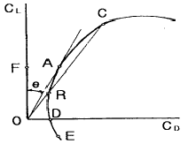
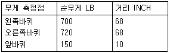

항공산업기사 (2006-03-05 기출문제)
1과목: 항공역학
1. 정적방향 안정성에 대한 추력효과에 대하여 가장 올바르게 설명한 내용은?
- 프로펠러 회전면이나 제트 입구가 무게중심의 앞에 위치했을 때 불안정을 유발한다.
- 수직 꼬리날개에서 추력에 의한 유도속도의 변경에 기인하는 간섭효과는 일반적으로 제트비행기인 경우에 더 심각하다.
- 수직 꼬리날개에서 추력에 의한 흐름방향의 변경에 기인하는 간섭효과는 일반적으로 제트비행기인 경우에 더 심각하다.
- 추력효과가 정적안정에 불리한 영향을 가장 크게 미치는 경우는 추력이 작고 동압이 클 때이다.
(정답률: 31%)

2. 다음 중 비행기의 방향안정에 일차적으로 영향을 주는 것은?
- 수평꼬리날개
- 수직꼬리날개
- 플랩
- 슬랫
(정답률: 88%)
3. 헬리콥터의종류중꼬리회전날개(Tail Rotor)가 필요한 헬리콥터는?
- 단일 회전날개 헬리콥터
- 동축 역회전식 회전날개 헬리콥터
- 병렬식 회전날개 헬리콥터
- 직렬식 회전날개 헬리콥터
(정답률: 83%)
4. 날개의 길이(span)가 10m이고, 넓이가 25m2인 날개의 가로세로비(aspect ratio)는?
- 2
- 4
- 6
- 8
(정답률: 86%)
5. 프로펠러 항공기의 비행속도가 V이고 프로펠러의 회전수가 N rpm이면, 이 항공기 프로펠러의 유효피치는?
- VN/60
- 60N/V
- 60V/N
- N/60V
(정답률: 68%)
6. 비행기의 조종면 이론에서 힌지 모멘트에 대한 설명 내용으로 가장 관계가 먼 것은?
- 힌지모멘트 계수에 비례한다.
- 동압에 비례한다.
- 조종면의 크기에 비례한다.
- 조종면의 폭에 반비례한다.
(정답률: 66%)
7. 날개면적이 100m2이며, 고도 5,000m에서 150m/sec로 비행하고 있는 항공기가 있다. 이 때의 항력계수는 0.02이다. 필요마력은? (단, 공기의 밀도는 0.070kg,S2/m4이다.)
- 1,890
- 2,500
- 3,150
- 3,250
(정답률: 64%)
8. 프로펠러의 회전에 의한 원심력이 깃각에 주는 영향은?
- 깃각을 작게 한다
- 깃각을 일정하게 유지하게 한다.
- 깃각을 크게한다.
- 영향을 주지 않는다.
(정답률: 52%)
9. 비행기의 조종력을 경감시키는 공력평형장치가 아닌 것은?
- 앞전밸런스
- 혼 밸런스
- 내부 밸런스
- 조종 밸런스
(정답률: 57%)
10. 항공기의 정적안정성이 작아지면 조종성 및 평형을 유지시키려는 힘의 변화로 가장 올바른 것은?
- 조종성은 감소되며, 평형유지는 쉬워진다.
- 조종성은 감소되며, 평형유지가 어렵다.
- 조종성은 증가하며, 평형유지는 쉬워진다.
- 조종성은 증가하나, 평형유지는 어려워진다.
(정답률: 69%)
11. 비행기의 중량 W=4500kg, 주날개면적 S=50m2, 비행기 고도가 해면일 때 비행기의 최소속도를 구하면? (단, 이 때 비행기의 최대양력계수는 1.6 , 밀도는 0.125kg,S2/m4이다.)
- 30m/s
- 40km/h
- 100m/s
- 120km/h
(정답률: 63%)
12. 프로펠러의 깃각이 일정하다면, 깃 끝으로 갈수록 받음각의 변화는?
- 작아진다.
- 일정하다.
- 커진다.
- 중간부분이 최대가 된다.
(정답률: 37%)
13. 그림과 같은 항공기의 양항력 곡선에 대한 설명 중 가장 올바른 것은?

- 최장거리 활공비행은 A점 받음각으로 활공하면 좋다.
- 최장거리 활공비행은 C점 받음각으로 활공하면 좋다.
- 수평 활공비행은 D점 받음각으로 이루어진다.
- 수직 활공비행은 F점 받음각으로 이루어진다.
(정답률: 63%)
14. 유도항력(induced drag)계수에 대한 설명 중 가장 올바른 것은?
- 양력이 발생하지 않을 때는 유도항력은 존재 하지 않는다.
- 저속 비행에서 유도항력은 무시될 수 있다.
- 날개의 가로세로비가 클 수록 유도항력은 증가한다.
- 동일한 속도에서 항공기 무게가 증가하면 유도항력은 감소한다.
(정답률: 66%)
15. 헬리콥터에서 회전날개의 깃은 회전하면 회전면을 밑면으로 하는 원추 모양을 만들게 된다. 이때 이 회전면과 원추 모서리가 이루는 각을 무슨각이라고 하는가?
- 받음각
- 코닝각
- 피치각
- 플래핑각
(정답률: 90%)
16. 비행기가 등속도로 수평비행을 하고 있다면 이 비행기에 작용하는 하중계수 g는?
- 0g
- 0.5g
- 1g
- 1.8g
(정답률: 66%)
17. 600km/h 의 수평속도의 비행기가 같은 받음 각 상태에서 30 °로 경사하여 선회하는 경우에 있어서 선회속도는?
- 645km/h
- 693km/h
- 850km/h
- 1200km/h
(정답률: 47%)
18. 임계마하수 (critical mach number) 란?
- 항력이 급격히 증가하는 마하수이다.
- 양력이 급격히 증가하는 마하수이다.
- 날개위의 임의점에서 최고속도가 M=1.0이 되는 마하수이다.
- 이론상 항공기가 비행할 수 없는 속도제한 마하수이다.
(정답률: 78%)
19. 가로세로비가 큰 날개에서 갑자기 실속하는 경우와 가장 거리가 먼 것은?
- 두께가 얇은 날개골
- 앞전 반지름이 작은 날개골
- 캠버가 큰 날개골
- 레이놀즈수가 작은 날개골
(정답률: 69%)
20. 날개의 시위 3m , 대기속도가 360km/h, 공기의 동점성계수 0.15cm2/sec 일 때 레이놀즈수는 얼마인가?
- 1×109
- 1×107
- 2×107
- 2×109
(정답률: 77%)
2과목: 항공기관
21. 가변 스테이터 구조의 목적에 대한 설명내용으로 가장 올바른 것은?
- 로터의 회전속도를 일정하게 한다.
- 유입공기의 절대속도를 일정하게 한다.
- 로터에 대한 유입공기의 상대속도를 일정하게 한다.
- 로터에 대한 유입공기의 받음각을 일정하게 한다.
(정답률: 61%)
22. 터빈엔진 시동시 과열시동(hot start)은 엔진의 어떤 현상을 말하는가?
- 시동 중 EGT가 최대한계를 넘은 현상이다.
- 시동 중 RPM이 최대한계를 넘은 현상이다.
- 엔진을 비행 중 시동하는 비상조치 중의 하나이다.
- 엔진이 냉각되지 않은 채로 시동을 거는 현상을 말한다.
(정답률: 80%)
23. 가스터빈 기관에서 사용하는 압축기 중 원심력식 보다 출류식이 좋은 점은?
- 무게가 가볍다.
- 염가이다.
- 단당 압력비가 높다.
- 전면면적에 비해 공기 유량이 크다.
(정답률: 60%)
24. 가솔린 기관의 출력을 나타내는 대표적인 수치로 평균유효압력 (pme)이 사용된다. 이 pme 를 증가시키는 유효한 방법으로 가장 관계가 먼 것은?
- 부스트 압력을 높인다.
- 흡기온도를 될 수 있는 대로 높인다.
- 마찰손실을 최소한으로 한다.
- 배압을 가능한 한 낮게 유지한다.
(정답률: 57%)
25. 터빈 깃의 냉각방법 중 터빈 깃을 다공성 재료로 만들고 깃 내부는 중공으로 하여 차가운 공기가 터빈 깃을 통하여 스며 나오게 함으로서 터빈 깃을 냉각시키는 것은?
- 대류냉각
- 충돌냉각
- 공기막 냉각
- 침출냉각
(정답률: 51%)
26. 증기폐색(Vapor lock) 이란?
- 기화기에서 연료의 증기화
- 연료가 방출노즐을 떠나고, 증기화 할 수 없는 상태
- 연료가 기화기에 도달하기전 연료의 증기화
- 연료라인에 수증기의 형성
(정답률: 67%)
27. 제트 엔진에서 연료조절장치(Fuel controlunit)의 일반적인 기본입력 신호로 가장 올바른 것은?
- 엔진회전수(rpm), 대기압력(pam), 압축기 출구압력(cdp), 배기가스 온도 (egt)
- 파워레버위치(pla), 엔진회전수(rpm), 대기압력(pam), 압축기 입구온도(cit), 압축기 출구압력 (cdp)
- 파워레버위치(pla), 연료압력(fp), 연소실 압력(pb), 터빈입구 온도 (tit)
- 파워레버위치(pla), 엔진회전수(rpm), 터빈 입구 온도 (tit), 압축기 출구압력(cdp)
(정답률: 68%)
28. 피스톤의 지름이16cm, 행정거리가 0.16m, 실린더수가4개인 기관의 총행정 체저근 얼마인가?
- 12.86L
- 13.86L
- 14.86L
- 15.86L
(정답률: 62%)
29. 정속 평형추(counter weight) 프로펠러의 깃을 고피치로 이동시켜 주는 힘은 어느것인가?
- 프로펠러 피스톤-실린더에 작용하는 기관오일 압력
- 프로펠러 피스톤-실린더에 작용하는 기관오일 압력과 평형추에 작용하는 원심력
- 평형추에 작용하는 원심력
- 프로펠러 피스톤-실린더에 작용하는 프로펠러 조속기 오일 압력
(정답률: 45%)
30. 왕복엔진의 로커암과 밸브 끝의 간극이 작다면?
- 밸브가 늦게 열리고 늦게 닫힌다.
- 밸브가 열려있는 기간이 짧다.
- 밸브가 일찍 열리고 일찍 닫힌다.
- 밸브가 일찍 열리고 늦게 닫힌다.
(정답률: 73%)
31. 가스터빈 기관에서 여압 및 드레인 밸브의 설명 내용으로 가장 관계가 먼 것은?
- 엔진정지시 fuel manifold 내에 잔류 연료를 밖으로 배출시킨다.
- fuel manifold 로 가는 1차 연료와 2차 연료를 분배하는 역할을 한다.
- 2차 pressurizing valve는 spring힘에 열리고 연료압력에 의해 close된다.
- 기관이 정지되었을 때 fuel nozzle에 남아있는 연료를 외부로 배출한다.
(정답률: 59%)
32. 왕복기관을 시동할 떄 실린더 안에 직접 연료를 분사시켜 농후한 혼합가스를 만들어 줌으로써 시동을 쉽게 하는 장치는?
- 프라이머
- 기화기
- 과급기
- 주연료 펌프
(정답률: 69%)
33. 가스터빈 기관의 용량형 점화계통에서 높은 에너지의 점화 불꽃을 일으키는 데 사용하는 것은?
- 유도코일
- 콘덴서
- 바이브레이터
- 점화 계전기
(정답률: 57%)
34. 오토사이클의 열효율은 다음 중 어느 것에 의해 가장 크게 영향을 받는가?
- 흡기온도
- 압축비
- 혼합비
- 옥탄가
(정답률: 66%)
35. 시동을 할 때 정상적인 throttle 보다 적게 열린다면 무엇을 초래하는가?
- 희박혼합비
- 농후혼합비
- 희박혼합비에 기인한 역화
- 조기점화
(정답률: 45%)
36. 왕복기관에서 과급기를 장착하는 주 목적은 무엇인가?
- 연료소비율의 향상
- 고공에서 출력저하 방지
- 착륙효율의 향상
- 기관효율의 향상
(정답률: 69%)
37. 4행정 사이클 엔진에서 한 실린더가 분당 200번 폭발할 때 크랭크 축의 회전수는?
- 100rpm
- 200rpm
- 400rpm
- 800rpm
(정답률: 56%)
38. 엔탈피를 가장 올바르게 설명한 것은?
- 열역학 제 2법칙으로 설명된다.
- 이상기체만 갖는 성질이다.
- 모든 물질의 성질이다.
- 내부에너지와 유동일의 합이다.
(정답률: 71%)
39. 기관 출력이 증가하였을 때 정속 프로펠러는 어떤 기능을 하는가?
- rpm그대로 유지하기 위해 깃각을 감소시키고, 받음각을 작게한다.
- rpm을 증가시키기 위해 깃각을 감소시키고, 받음각을 작게한다.
- rpm을 그대로 유지하기 위해 깃각을 증가시키고, 받음각을 작게한다.
- rpm을 증가시키기 위해 깃각을 증가시키고, 받음각을 크게한다.
(정답률: 51%)
40. 에너지에는 상호간에 변환이 가능하고 물체가 갖고 있는 에너지의 총합은 외부와 에너지를 교환하지 않는한 일정하다는 법칙은?
- 에너지 보존법칙
- 보일의 법칙
- 샤를의 법칙
- 열역학 제 2법칙
(정답률: 76%)
3과목: 항공기체
41. 리벳의 배치에 대한 설명 중 가장 관계가 먼 내용은?
- 리벳의 열과 열 사이를 리벳피치 한다.
- 횡단 피치는 리벳 열 간의 거리이다.
- 리벳 피치의 최소간격은 3d 이다
- 리벳 끝거리는 판재의 가장 자리에서 첫째번 리벳 구멍 중심까지의 거리이다.
(정답률: 52%)
42. 넌 셀프 락킹 너트 (Non self locking nut)에 해당되지 않는 것은?
- 평 너트
- 잼 너트
- 인서트 비금속 너트
- 나비너트
(정답률: 65%)
43. 조종계통이 일차 조종면에 연결되어 있고, 일차 조종면과 이차 조종면은 서로 반대방향으로 작동하며 일차 조종면과 이차 조종면에 작용하는 풍압이 평형되는 위치에서 일차 조종면의 위치가 정해지는 탭은?
- 트림탭
- 콘트롤탭
- 밸런스탭
- 스프링탭
(정답률: 63%)
44. 알루미늄 합금의 열처리의 기호 T4의 의미는?
- 연화(annealing)한 것
- 용액 열처리 후 냉각한 것
- 용액 열처리 후 인공시효품
- 용액 열처리 후 자연시효(상온시효) 완료품
(정답률: 71%)
45. 다음에서 항공기의 무게중심 위치를 구하면?

- 60.25inch
- 62.46inch
- 65.25inch
- 67.46inch
(정답률: 61%)
46. 비금속 재료인 플라스틱 가운데 투명도가 가장 높아서 항공기용 창문유리, 객실내부의 전등덮개 등에 사용되며, 일명 플랙시글라스라고도 하는 것은?
- 네오프렌
- 폴리메틸메타크릴레이트
- 폴리염화비닐
- 에폭시수지
(정답률: 68%)
47. 크리닝 아웃(cleaning out) 이 아닌 것은?
- 트리밍 (trimming)
- 커팅(cutting)
- 파일링(filling)
- 크린업(clean up)
(정답률: 73%)
48. 하중배수선두(V-n)에서 구조 역학적인 의미를 갖지 않는 속도는?
- 설계 순항속도
- 설계 운용속도
- 설계 돌풍속도
- 설계 급강하 속도
(정답률: 42%)
49. 2024 TO 알루미늄 판을 45°로 굽힐 때 굽힘 허용값은? (단, 재료의 두께 T=0.8mm 곡률반지름R=2.4mm)
- 2.⑤4
- 2.100
- 2.198
- 2.532
(정답률: 61%)
50. 트라이싸이클 기어에 대한 다음 설명 중 가장 관계가 먼 내용은?
- 기어의 배열은 노스기어와 메인기어로 되어 있다.
- 빠른 착륙 속도에서 강한 브레이크를 사용할 수 있다.
- 이착륙 중에 조종사에게 좋은 시야를 제공한다.
- 항공기 중력중심이 메인기어 후방으로 움직여 그라운드 루핑을 방지한다.
(정답률: 60%)
51. 페일 세이프 구조의 백업구조 (back-upstructure)를 가장 올바르게 설명한 것은?
- 많은 부재로 되어있고 각각의 부재는 하중을 고르게 되도록 되어 있는 구조
- 하나의 큰부재를 사용하는 대신 2개 이상의 작은 부재를 결합하여 1개의 부재와 같은 또는 그 이상의 강도를 지닌 구조
- 규정된 하중은 모두 좌측 부재에서 담당하고 우측 부재는 예비 부재로 좌측 부재가 파괴된 후 그 부재를 대신하여 전체하중을 담당한다.
- 단단한 보강재를 대어 해당량 이상의 하중을 이보강재가 분담하는 구조
(정답률: 77%)
52. 항공기 조종 계통의 케이블의 장력은 신축과 온도 변화에 따른 주기적 점검 조절을 해야 한다. 무엇으로 조절하는가?
- 케이블 장력 조절기 (cable tension regulator)
- 턴버클(turnbuckle)
- 케이블 드럼(cable drum)
- 케이블 장력계 (cable tensionsionmeter)
(정답률: 52%)
53. 항공기의 위치표시 방법 중에서 수직인 중심선의 왼쪽 또는 오른쪽에 평행한 폭을 나타내는 것은?
- 휴즈레지 스테이션
- 버턱라인
- 워터라인
- 레퍼런스 라인
(정답률: 77%)
54. 다음의 합금강 SAE 의 부호에서 탄소를 가장 많이 함유하고 있는 것은?
- 1025
- 2330
- 4130
- 6150
(정답률: 74%)
55. NAS 514 P428 -8의 스크류에서 틀린 내용은?
- NAS:규격명
- P:머리의 홈
- 428: 지름, 나사산수
- 8: 계열
(정답률: 59%)
56. 턴록 중에서 에어록 패스너의 구성요소가 아닌 것은?
- 스터드
- 스터드 리셉터클
- 크로스핀
- 그로메트
(정답률: 51%)
57. 항공기 앞착륙 장치의 좌우 방향 진동을 방지하거나 감쇠시키는 장치는 무엇인가?
- 시미댐퍼
- 방향제어장치
- 오리피스
- 오버센터 링크
(정답률: 85%)
58. 세미모노코크 구조형식의 비행기에서 표피는 주로 어느 하중을 담당하는가?
- 굽힘, 인장 및 압축
- 굽힘과 비틀림
- 인장력과 압축력
- 비틀림과 전단력
(정답률: 58%)
59. 알루미늄합금을 용접할 때 가장 적합한 불꽃은?
- 탄화불꽃
- 중성불꽃
- 산화불꽃
- 활성불꽃
(정답률: 55%)
60. 경비행기의 날개를 떠받고 있는 지주는 비행중에 어떤 하중을 가장 많이 받는가?
- 비틀림 모멘트
- 굽힘 모멘트
- 인장력
- 압축력
(정답률: 55%)
4과목: 항공장비
61. 지시대기속도에 피토-정압관 장착 위치 및 계기자체의 오차를 수정한 속도는?
- EAS
- CAS
- TAS
- IAS
(정답률: 54%)
62. 전리층의 반사파를 이용하여 장거리 통신을 할 수 있는 방식으로 가장 올바른 것은?
- HF
- VHF
- UHF
- SHF
(정답률: 76%)
63. 항공기 기관의 구동축과 발전기축 사이에 장착하여 주파수를 일정하게 하여 주는 장치를 무엇이라 하는가?
- 정속 구동 장치
- 변속 구동 장치
- 출력 구동 장치
- 주파수 구동 장치
(정답률: 79%)
64. 각속도 자이로가 사용되는 것은?
- 정침의
- 인공수평의
- 선회계
- 경사계
(정답률: 70%)
65. 8극 3상 교류 발전기로 1500Hz를 발생시키려면 회전수는 얼마인가?
- 1125rpm
- 22500rpm
- 100rpm
- 200rpm
(정답률: 67%)
66. 공기냉각장치에서 공기의 냉각을 가장 올바르게 설명한 것은?
- 프리쿨러에 의하여 냉각된다.
- 엔진 압축기에서의 브리드에어는 1,2차 열교환기와 쿨링터빈을 지나면서 냉각된다.
- 1,2차 열교환기에 의하여 냉각된다.
- 프레온의 응축에 의하여 냉각된다.
(정답률: 63%)
67. 시동 토크가 크고 입력이 과대하게 되지 않으므로 시동운전시 가장 좋은 전동기는?
- 분권 전동기
- 직권 전동기
- 복권 전동기
- 화동복권 전동기
(정답률: 80%)
68. 화재탐지기에 요구되는 기능과 성능에 대한 설명으로 가장 관계가 먼 것은?
- 화재가 발생되지 않는 경우에는 작동이나 경고를 발하지 않을 것
- 화재가 계속 진행하고 있을 때는 연속적으로 작동할 것
- 정비나 취급이 복잡하더라도 중량이 가볍고 장착이 용이할 것
- 화재가 꺼진 후에는 정확하게 지시가 제거될 것
(정답률: 70%)
69. 항공 교통 관제 (ATC)에서 항공기가 응답하는 비행고도로 가장 올바른 것은?
- 진고도
- 기압고도
- 절대고도
- 상대고도
(정답률: 40%)
70. 항공기에 사용하는 축전지에는 몇 시간 방전율을 적용하는가?
- 3시간
- 4시간
- 5시간
- 6시간
(정답률: 56%)
71. AUTO FLIGHT CONTROL SYSTEM 의 유도기능에 속하지 않는 것은?
- DME에 의한 유도
- VOR에 의한 유도
- ILS에 의한 유도
- INS에 의한 유도
(정답률: 39%)
72. 공유압 계통도에서 다운 스트림을 가장 올바르게 설명한 것은?
- 어떤 밸브를 기준으로 배출 방향쪽
- 어떤 밸브를 기준으로 유입구쪽
- 밸브의 내부흐름
- 어떤 밸브를 기준으로 하부 흐름
(정답률: 50%)
73. 항공기의 수직방향 속도를 분당 FEET로 지시하는 계기는 어느 것인가?
- VSI
- LRRA
- DME
- HSI
(정답률: 70%)
74. 전기 저항식 온도계에서 규정보다 높은 저항의 수감부를 사용했다면 그 지시값은?
- 규정보다 높아진다.
- 규정보다 낮아진다
- 변함이 없다.
- 0을 가리킨다.
(정답률: 44%)
75. 싱크로 전기기기에 대한 설명으로 틀린 것은?
- 회전축의 위치를 측정 또는 제어하기 위해 사용되는 특수한 회전기이다.
- 항공기에서는 콤파스 계기상에 VOR국이나 ADF국방위를 지시하는 지시계기로서 사용되고 있다.
- 구조는 고정자측에 1차권선, 회전자측에 2차 권선을 가지는 회전 변압기이고, 2차측에는 정현파 교류가 발생하도록 되어 있다.
- 각도검출 및 지시용으로는 2개의 싱크로 전기기기를 1조로 사용한다.
(정답률: 64%)
76. 유압계통의 작동유는 열팽창이 적은 것을 요구한다. 그 이유로 가장 올바른 것은?
- 고 고도에서 증발 감소를 위해서다.
- 고온일 때 과대압력을 방지한다.
- 화재을 최소한 방지한다.
- 작동유의 순환불능을 해소한다.
(정답률: 81%)
77. 24v, 1/3HP motor 가 효율 75%에서 동작되고 있으면 그 때의 전류는?
- 4.6A
- 13.8A
- 22.8A
- 30.0A
(정답률: 50%)
78. 광물성 작동유에 사용되는 SEAL은?
- 천연고무
- 일반고무
- 네오프렌 합성고무
- 뷰틸 합성 고무
(정답률: 75%)
79. 항공기 POSITION 그리고 ATTITUDE를 VISUALINDICATION 해주는 LIGHT 는?
- Anticollision light
- Navigation light
- Landing light
- Emergency light
(정답률: 64%)
80. 빗방울을 제거하는 목적으로 사용되는 계통이 아닌 것은?
- 윈드실드 와이퍼
- 에어커텐
- 방빙부츠
- 레인 리펠런트
(정답률: 77%)